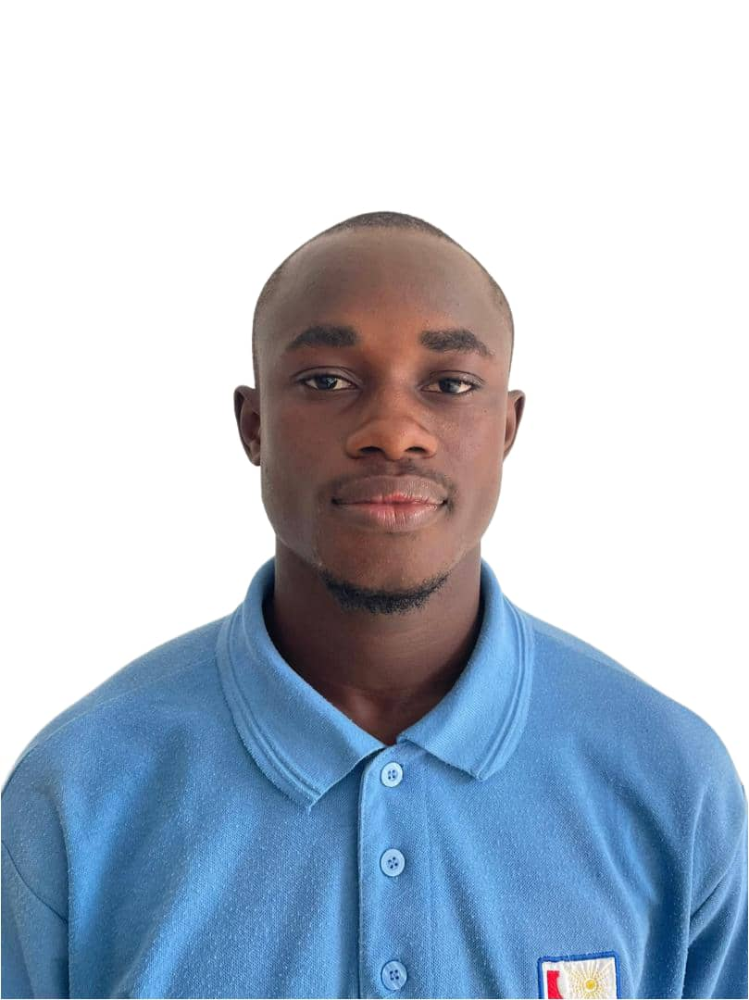

Bonjour, je suis Ousmane Koné
Étudiant en Réseau Informatique & Télécommunication
Apprenant passionné par l'infrastructure IT, la cybersécurité et l'administration des systèmes. Mon objectif est d'intégrer la SupInfo pour consolider mes bases et me préparer à une carrière rigoureuse dans la gestion des réseaux critiques.

À propos de moi
Objectif Professionnel
Intégrer la SupInfo est mon ambition principale. Je souhaite y poursuivre un cursus spécialisé afin de devenir un expert polyvalent en Cybersécurité, Systèmes & Réseaux. Je suis naturellement curieux et très adaptable, des qualités essentielles pour maîtriser l'administration des infrastructures informatiques et relever les défis de sécurité.
Mes expériences passées, bien que variées, ont forgé mon sens de l'organisation, ma rigueur méthodologique et mon excellente communication. Je suis prêt à mettre ces atouts au service d'une entreprise innovante.
Ousmane Koné
+225 0171 732202
benousmane.kone92@gmail.com
Côte d'Ivoire
Formation & Diplômes
Licence 1 & 2 - Réseau Informatique
Gecos-Formation, Abidjan
Baccalauréat Scientifique
Collèges-Rodin
BEPC
Institut LKM
CEPE
Institut LKM
Mon Expérience
Agent de Taxiphone
Juillet à Août 2023 | Gestion et Service ClientGestion complète des opérations. Cette expérience a développé mes compétences en organisation, gestion de caisse et communication professionnelle, des atouts précieux pour l'administration IT.
Professeur Particulier (Maths & Sciences)
Régulier | Suivi personnaliséJ’ai accompagné des élèves de la Seconde à la Terminale en renforçant ma pédagogie, ma méthode et ma capacité à adapter l’apprentissage. Un suivi régulier m’a permis de soutenir leur motivation et leur progression depuis 2022.
Agent de Salubrité
Septembre 2022 | Rigueur et Environnement SainMission de propreté sur un événement majeur. J'ai démontré ma rigueur, mon engagement et ma capacité à maintenir un environnement structuré et fonctionnel sous pression.
Mes Projets Personnels
Mise en place d'un Réseau d'Entreprise Simplifié
Conception et simulation (via Cisco Packet Tracer) d'un réseau local pour une PME (LAN), incluant la segmentation (VLAN) et la configuration des switchs/routeurs de base.
Gestion de Magasin via Feuille Excel
Création d'un outil de suivi financier sur Excel pour automatiser le calcul des bénéfices, pertes et stocks. Démonstration de ma rigueur analytique et de mes compétences en Exploitation (MS Office).
Initiation à la Virtualisation (VM)
Installation et configuration de machines virtuelles (VirtualBox) pour tester différents systèmes d'exploitation (Linux, Windows Server) et comprendre les architectures de serveurs.
Mes compétences
Réseaux & Systèmes
Méthodologie & Outils
Compétences Transversales
Langues
Me contacter
Informations de Contact
Je suis activement à la recherche d'opportunités de stages, d'alternances ou de collaborations dans le domaine de l'administration IT, Réseau et Cybersécurité.
Email Professionnel
benousmane.kone92@gmail.com
Téléphone / WhatsApp
(+225) 0171 732202
Adresse
Abidjan, Côte d'Ivoire